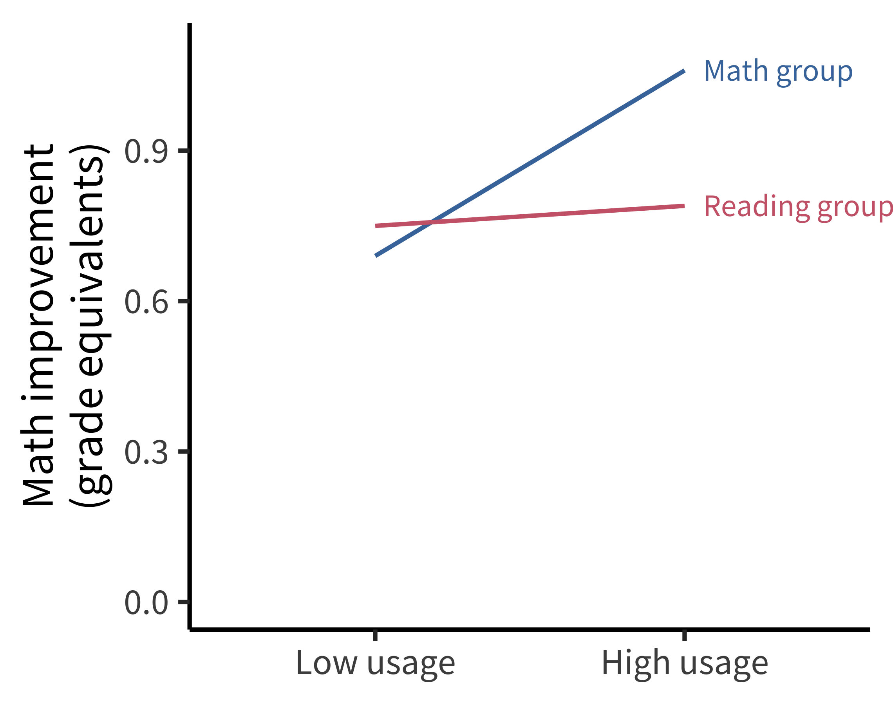
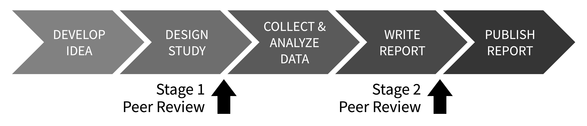

11 Preregistration
learning goals
- Recognize the dangers of researcher degrees of freedom
- Understand the differences between exploratory and confirmatory modes of research
- Articulate how preregistration can reduce risk of bias and increase transparency
When not planned beforehand, data analysis can approximate a projective technique, such as the Rorschach, because the investigator can project on the data his own expectancies, desires, or biases and can pull out of the data almost any “finding” he may desire.
—Theodore X. Barber (1976 [1927])
The first principle is that you must not fool yourself—and you are the easiest person to fool … After you’ve not fooled yourself, it’s easy not to fool other scientists. You just have to be honest in a conventional way after that.
—Richard Feynman (1974)
The last section of the book focused on planning a study—in particular, making decisions around measurement, design, and sampling. In this next section, we turn to the nuts and bolts of executing a study. We start with preregistration (this chapter), before discussing the logistics of data collection (chapter 12) and project management (chapter 13). These chapters touch on the themes of transparency and bias reduction through decisions about how to document and organize your data collection.
Let’s start with simply documenting choices about design and analysis. Although there are plenty of incorrect ways to design and analyse experiments, there is no single correct way. In fact, most research decisions have many justifiable choices—sometimes called “researcher degrees of freedom.” For example, will you stop data collection after 20, 200, or 2,000 participants? Will you remove outlier values, and how will you define them? Will you conduct subgroup analyses to see whether the results are affected by sex, or age, or some other factor?
Consider a simplified, hypothetical case where you have to make five analysis decisions and there are five justifiable choices for each decision—this alone would result in 3,125 (\(5^5\)) unique ways to analyze the data! If you were to make these decisions post hoc (after observing the data) then there’s a danger your decisions will be influenced by the outcome of the analysis (“data-dependent decision making”) and skew toward choices that generate outcomes more aligned with your personal preferences. Now think back to the last time you read a research paper. Of all the possible ways that the data could have been analyzed, how do you know that the researchers did not just select the approach that generated results most favorable to their pet hypothesis?
In this chapter, we will find out why flexibility in the design, analysis, reporting, and interpretation of experiments, combined with data-dependent decision-making, can introduce bias and lead to scientists fooling themselves and each other. We will also learn about preregistration, the process of writing down and registering your research decisions before you observe the data. Preregistration intersects with two of our themes: it can be used to reduce bias in our data analysis, and it can provide the transparency that other scientists need to properly evaluate and interpret our results (Hardwicke and Wagenmakers 2023).
case study
Undisclosed analytic flexibility?
Educational apps for children are a huge market, but relatively few randomized trials have been done to see whether or when they produce educational gains. Filling this important gap, Berkowitz et al. (2015) reported a high-quality field experiment of a free educational app, “Bedtime Math at Home,” with participants randomly assigned to either math or reading conditions over the course of a full school year. Critically, along with random assignment, the study also included standardized measures of math and reading achievement. These measures allowed the authors to compute effects in grade-level equivalents, a meaningful unit from a policy perspective.
The key result is shown in figure 11.1. Families who used the math app frequently showed greater gains in math than the control group. Although this finding appeared striking, the figure didn’t directly visualize the primary causal effect of interest, namely the size of the effect of study condition on math scores. Instead the data were presented as estimated effects for specific levels of app usage.
Because the authors made their data openly available, it was possible for Frank (2016) to do a simple analysis to examine the causal effect of interest. When not splitting the data by usage and adjusting by covariates, there was no significant main effect of the intervention on math performance figure 11.2. Since this analysis was not favorable to the primary intervention—and because it was not reported in the paper—it could have been the case that the authors had analyzed the data several ways and chosen to present an analysis that was more favorable to their hypotheses of interest.
As is true for many papers prior to the rise of preregistration, it’s not possible to know definitively whether the reported analysis in Berkowitz et al. (2015) was influenced by the authors’ desired result. As we’ll see below, such data-dependent analyses can lead to substantial bias in reported effects. This uncertainty about a paper’s analytic strategy can be avoided by the use of preregistration. In this case, preregistration would have convinced readers that the analyses decisions were not influenced by the data, thereby increasing the value of this otherwise high-quality study.
11.1 Lost in a garden of forking paths
One way to visualize researcher degrees of freedom is as a vast decision tree or “garden of forking paths” (figure 11.3). Each node represents a decision point, and each branch represents a justifiable choice. Each unique pathway through the garden terminates in an individual research outcome.

Because scientific observations typically consist of both noise (random variation unique to this sample) and signal (regularities that will reoccur in other samples), some of these pathways will inevitably lead to results that are misleading (e.g., inflated effect sizes, exaggerated evidence, or false positives). The more potential paths in the garden that you might explore, the higher the chance of encountering misleading results.
Statisticians refer to this issue as a multiplicity (multiple comparisons) problem. As we talked about in chapter 6, multiplicity can be addressed to some extent with statistical countermeasures, like the Bonferroni correction; however, these adjustment methods need to account for every path that you could have taken (Gelman and Loken 2014; de Groot 2014 [1956]). When you navigate the garden of forking paths while working with the data, it is easy to forget—or even be unaware of—every path that you could have taken, so these methods can no longer be used effectively.
The signal-to-noise ratio is worse in particular situations (as common in psychology) with small effect sizes, high variation, and large measurement errors (Ioannidis 2005). Researcher degrees of freedom may be constrained to some extent by strong theory (Oberauer and Lewandowsky 2019), community methodological norms, or replication studies, though these constraints may be more implicit than explicit, and can still leave plenty of room for flexible decision-making.
11.1.1 Data-dependent analysis
When a researcher navigates the garden of forking paths during data analysis, their choices might be influenced by the data (data-dependent decision-making), which can introduce bias. If a researcher is seeking a particular kind of result (see the Depth box below), then they are more likely to follow the branches that steer them in that direction.
You could think of this a bit like playing a game of “hot () or cold (),” where indicates that the choice will move the researcher closer to a desirable overall result and indicates that the choice will move them further away. Each time the researcher reaches a decision point, they try one of the branches and get feedback on how that choice affects the results. If the feedback is then they take that branch. If the answer is , they try a different branch. If they reach the end of a complete pathway, and the result is , maybe they even retrace their steps and try some different branches earlier in the pathway. This strategy creates a risk of bias because it systematically skews results toward the researcher’s preferences (Hardwicke and Wagenmakers 2023).1
1 We say “risk of bias” rather than just “bias” because in most scientific contexts, we do not have a known ground truth to compare the results to. So in any specific situation, we do not know the extent to which data-dependent decisions have actually biased the results.
depth
Only human: Cognitive biases and skewed incentives
There’s a storybook image of the scientist as an objective, rational, and dispassionate arbiter of truth (Veldkamp et al. 2017). But in reality, scientists are only human: they have egos, career ambitions, and rent to pay! So even if we do want to live up to the storybook image, it’s important to acknowledge that our decisions and behavior are also influenced by a range of cognitive biases and external incentives that can steer us away from that goal. Let’s first look at some relevant cognitive biases that might lead scientists astray:
Confirmation bias: Preferentially seeking out, recalling, or evaluating information in a manner that reinforces one’s existing beliefs (Nickerson 1998).
Hindsight bias: Believing that past events were always more likely to occur relative to our actual belief in their likelihood before they happened (“I knew it all along!”) (Slovic and Fischhoff 1977).
Motivated reasoning: Rationalizing prior decisions so they are framed in a favorable light, even if they were irrational (Kunda 1990).
- Apophenia: Detecting seemingly meaningful patterns in noise (Gilovich, Vallone, and Tversky 1985).
To make matters worse, the incentive structure of the scientific ecosystem often adds additional motivation to get things wrong. The allocation of funding, awards, and publication prestige is often based on the nature of research results rather than research quality (Smaldino and McElreath 2016; Nosek, Spies, and Motyl 2012). For example, many academic journals, especially those that are widely considered to be the most prestigious, appear to have a preference for novel, positive, and statistically significant results over incremental, negative, or null results (Bakker, Dijk, and Wicherts 2012). There is also pressure to write articles with concise, coherent, and compelling narratives (Giner-Sorolla 2012). This set of forces incentivizes scientists to be “impressive” over being right and encourages questionable research practices. The process of iteratively \(p\)-hacking and HARKing one’s way to a “beautiful” scientific paper has been dubbed “The Chrysalis Effect” (O’Boyle, Banks, and Gonzalez-Mulé 2017), illustrated in figure 11.4.

In sum, scientists’ human flaws—and the scientific ecosystem’s flawed incentives—highlight the need for transparency and intellectual humility when reporting the findings of our research (Hoekstra and Vazire 2021).
In the most egregious cases, a researcher may try multiple pathways until they obtain a desirable result and then selectively report that result, neglecting to mention that they have tried several other analysis strategies (also known as \(p\)-hacking, a practice we’ve discussed throughout the book).2 You may remember an example of this practice in chapter 3, where participants apparently became younger when they listened to “When I’m 64” by The Beatles. Another example of how damaging the garden of forking paths can be comes from the “discovery” of brain activity in a dead Atlantic Salmon (Bennett, Miller, and Wolford 2009)! Researchers deliberately exploited flexibility in the fMRI analysis pipeline and avoided multiple comparisons corrections, allowing them to find brain activity where there was only dead fish (figure 11.5).
2 “If you torture the data long enough, it will confess” (Good 1972).

11.1.2 Hypothesizing after results are known
In addition to degrees of freedom in experimental design and analysis, there is additional flexibility in how researchers interpret research results. As we discussed in chapter 2, theories can accommodate even conflicting results in many different ways—for example, by positing auxiliary hypotheses that explain why a particular datapoint is special.
The practice of selecting or developing your hypothesis after observing the data has been called “hypothesizing after the results are known,” or “HARKing” (Kerr 1998). HARKing is potentially problematic because it expands the garden of forking paths and helps to justify the use of various additional design and analysis decisions (figure 11.6). For example, you may come up with an explanation for why an intervention is effective in men but not in women in order to justify a post hoc subgroup analysis based on sex (see the Case study box). The extent to which HARKing is problematic is contested (for discussion see Hardwicke and Wagenmakers 2023). But at the very least, it’s important to be honest about whether hypotheses were developed before or after observing the data.

But hang on a minute! Isn’t it a good thing to seek out interesting results if they are there in the data? Shouldn’t we “let the data speak”? The answer is yes! But it’s crucial to understand the distinction between exploratory and confirmatory modes of research.3 Confirmation involves making research decisions before you’ve seen the data whereas exploration involves making research decisions after you’ve seen data.
3 In practice, an individual study may contain both exploratory and confirmatory aspects, which is why we describe them as different “modes.”
The key things to remember about exploratory research are that you need to (1) be aware of the increased risk of bias arising from data-dependent decision-making and calibrate your confidence in the results accordingly; and (2) be honest with other researchers about your analysis strategy so they are also aware of the risk of bias and can calibrate their confidence in the outcomes accordingly. In the next section, we will learn about how preregistration helps us to make this important distinction between exploratory and confirmation research.
11.2 Reducing risk of bias, increasing transparency, and calibrating confidence with preregistration
You can counter the problem of researcher degrees of freedom and data-dependent decision-making by making research decisions before you have seen the data—like planning your route through the garden of forking paths before you start your journey (Wagenmakers et al. 2012; Hardwicke and Wagenmakers 2023). If you stick to the planned route, then you have eliminated the possibility that your decisions were influenced by the data.
Preregistration is the process of declaring your research decisions in a public registry before you analyze (and often before you collect) the data. Preregistration ensures that your research decisions are data-independent, which reduces risk of bias arising from the issues described above. Preregistration also transparently conveys to others what you planned, helping them to determine the risk of bias and calibrate their confidence in the research results. In other words, preregistration can dissuade researchers from engaging in questionable research practices like \(p\)-hacking and HARKing, because they can be held accountable to their original plan while also providing the context needed to properly evaluate and interpret research.

Preregistration does not require that you specify all research decisions in advance, only that you are transparent about what was planned, and what was not planned. This transparency helps to make a distinction between which aspects of the research were exploratory and which were confirmatory (figure 11.7). All else being equal, we should have more confidence in confirmatory results, because there is a lower risk of bias. Exploratory results have a higher risk of bias, but they are also more sensitive to serendipitous (unexpected) discoveries. So the confirmatory mode is best suited to testing hypotheses, and the exploratory mode is best suited to generating them. Therefore, exploratory and confirmatory research are both valuable activities—it is just important to differentiate them (Tukey 1980)! Preregistration offers the best of both worlds by clearly separating one from the other.
In addition to the benefits described above, preregistration may improve the quality of research by encouraging closer attention to study planning. We’ve found that the process of writing a preregistration really helps facilitate communication between collaborators, and can catch addressable problems before time and resources are wasted on a poorly designed study. Detailed advanced planning can also create opportunities for useful community feedback, particularly in the context of registered reports (see the Depth box below), where dedicated peer reviewers will evaluate your study before it has even begun.
depth
Preregistration and friends: A toolbox to address researcher degrees of freedom
Several useful tools can be used to complement or extend preregistration. In general, we would recommend that these tool are combined with preregistration, rather than used as a replacement because preregistration provides transparency about the research and planning process (Hardwicke and Wagenmakers 2023). The first two of these are discussed in more detail in the last section of chapter 7.
Robustness checks. Robustness checks (also called “sensitivity analyses”) assess how different decision choices in the garden of forking paths affect the eventual pattern of results. This technique is particularly helpful when you have to choose between several justifiable analytic choices, neither of which seem superior to the other, or which have complementary strengths and weaknesses. For example, you might run the analysis three times using three different methods for handling missing data. Robust results should not vary substantially across the three different choices.
Multiverse analyses. Recently, some researchers have started running large-scale robustness checks called “multiverse” (Steegen et al. 2016) or “specification curve” (Simonsohn, Simmons, and Nelson 2020) analyses. We discussed these a bit in chapter 7. Some have argued that these large-scale robustness checks make preregistration redundant; after all, why prespecify a single path if you can explore them all (Rubin 2020; Oberauer and Lewandowsky 2019)? But interpreting the results of a multiverse analysis is not straightforward; for example, it seems unlikely that all of the decision choices are equally justifiable (Giudice and Gangestad 2021). Furthermore, if multiverse analyses are not preregistered, then they introduce researcher degrees of freedom and create an opportunity for selective reporting, which increases risk of bias.
Held-out sample. One option to benefit from both exploratory and confirmatory research modes is to split your data into training and test samples. (The test sample is commonly called “held out” because it is “held out” from the exploratory process.) You can generate hypotheses in an exploratory mode in the training sample and use that as the basis to preregister confirmatory analyses in the held-out sample. A notable disadvantage of this strategy is that splitting the data reduces statistical power, but in cases where data are plentiful—including in much of machine learning—this technique is the gold standard.
Masked analysis (traditionally called “blind analysis”). Sometimes problems, such as missing data, attrition, or randomization failure that you did not anticipate in your preregistered plan, can arise during data collection. How do you diagnose and address these issues without increasing risk of bias through data-dependent analysis? One option is masked analysis, which disguises key aspects of the data related to the results (for example, by shuffling condition labels or adding noise) while still allowing some degree of data inspection (Dutilh, Sarafoglou, and Wagenmakers 2019). After diagnosing a problem, you can adjust your preregistered plan without increasing risk of bias, because your decisions have not been influenced by the results.
Standard operating procedures. Community norms, perhaps at the level of your research field or lab, can act as a natural constraint on researcher degrees of freedom. For example, there may be a generally accepted approach for handling outliers in your community. You can make these constraints explicit by writing them down in a standard operating procedures (SOP) document—a bit like a living meta-preregistration (Lin and Green 2016).
Open lab notebooks. Maintaining a lab notebook can be a useful way to keep a record of your decisions as a research project unfolds. Preregistration is a bit like taking a snapshot of your lab notebook at the start of the project, when all you have written down is your research plan. Making your lab notebook publicly available is a great way to transparently document your research and departures from the preregistered plan.

Registered reports. Registered reports (figure 11.8) are a type of article format that embeds preregistration directly into the publication pipeline (Chambers and Tzavella 2020). The idea is that you submit your preregistered protocol to a journal and it is peer reviewed before you’ve even started your study. If the study is approved, the journal agrees to publish it, regardless of the results. This is a radical departure from traditional publication models where peer reviewers and journals evaluate your study after its been completed and the results are known. Because the study is accepted for publication independently of the results, registered reports can offer the benefits of preregistration with additional protection against publication bias. They also provide a great opportunity to obtain feedback on your study design while you can still change it!
11.3 How to preregister
High-stakes studies such as medical trials must be preregistered (Dickersin and Rennie 2012). In 2005, a large international consortium of medical journals decided that they would not publish unregistered trials. The discipline of economics also has strong norms about study registration (see, e.g., https://www.socialscienceregistry.org). But preregistration is pretty new to psychology (Nosek et al. 2018), and there’s still no standard way of doing it—you’re already at the cutting edge!
We recommend using the Open Science Framework (OSF) as your registry. OSF is one of the most popular registries in psychology, and you can do lots of other useful things on the platform to make your research transparent, like sharing data, materials, analysis scripts, and preprints. On OSF, it’s possible to “register” any file you have uploaded. When you register a file, it creates a time-stamped, read-only copy, with a dedicated link. You can add this link to articles reporting your research.
| Question | |||
|---|---|---|---|
| 1 | Data collection. Have any data been collected for this study already? | ||
| 2 | Hypothesis. What’s the main question being asked or hypothesis being tested in this study? | ||
| 3 | Dependent variable. Describe the key dependent variable(s) specifying how they will be measured. | ||
| 4 | Conditions. How many and which conditions will participants be assigned to? | ||
| 5 | Analyses. Specify exactly which analyses you will conduct to examine the main question/hypothesis. | ||
| 6 | Outliers and Exclusions. Describe exactly how outliers will be defined and handled, and your precise rule(s) for excluding observations. | ||
| 7 | Sample Size. How many observations will be collected, or what will determine sample size? No need to justify decision, but be precise about exactly how the number will be determined. | ||
| 8 | Other. Anything else you would like to preregister (e.g., secondary analyses, variables collected for exploratory purposes, unusual analyses planned). |
One approach to preregistration is to write a protocol document that specifies the study rationale, aims or hypotheses, methods, and analysis plan, and register that document.4 Open Science Framework also has a collection of dedicated preregistration templates that you can use if you prefer. An outline of such a template is shown in table 11.1. These templates are often tailored to the needs of particular types of research. For example, there are templates for general quantitative psychology research (“PRP-QUANT”; Bosnjak et al. 2022), cognitive modeling (Crüwell and Evans 2021), and secondary data analysis (Akker et al. 2019). The OSF interface may change, but currently this guide provides a set of steps to create a preregistration.
4 You can think of a study protocol as a bit like a research paper without a results and discussion section (here’s an example from one of our own studies: https://osf.io/2cnkq).
Once you’ve preregistered your plan, you just go off and run the study and report the results, right? Well hopefully … but things might not turn out to be that straightforward. It’s quite common to forget to include something in your plan or to have to depart from the plan due to something unexpected. Preregistration can actually be pretty hard in practice (Nosek et al. 2019).
Don’t worry though—remember that a key goal of preregistration is transparency to enable others to evaluate and interpret research results. If you decide to depart from your original plan and conduct data-dependent analyses, then this decision may increase the risk of bias. But if you communicate this decision transparently to your readers, they can appropriately calibrate their confidence in the results. You may even be able to run both the planned and unplanned analyses as a robustness check (see the Depth box) to evaluate the extent to which this particular choice impacts the results.
When you report your study, it is important to distinguish between what was planned and what was not. If you ran a lot of data-dependent analyses, then it might be worth having separate exploratory and confirmatory results sections. On the other hand, if you mainly stuck to your original plan, with only minor departures, then you could include a table (perhaps in an appendix) that outlines these changes (for example, see Supplementary Information A of this article).
11.4 Chapter summary: Preregistration
We’ve advocated here for preregistering your study plan. This practice helps to reduce the risk of bias caused by data-dependent analysis (the “garden of forking paths” that we described) and transparently communicate the risk of bias to other scientists. Importantly, preregistration is a “plan, not a prison”: in most cases, preregistered, confirmatory analyses coexist with exploratory analyses. Both are an important part of good research—the key is to disclose which is which!
discussion questions
P-hack your way to scientific glory! To get a feel for how data-dependent analyses might work in practice, have a play around with this app: https://projects.fivethirtyeight.com/p-hacking. Do you think preregistration would affect your confidence in claims made about this dataset?
Preregister your next experiment! The best way to get started with preregistration is to have a go with your next study. Head over to https://osf.io/registries/osf/new and register your study protocol or complete one of the templates. What aspects of preregistration did you find most difficult, and what benefits did it bring?
readings
Nosek, Brian A., Charles R. Ebersole, Alexander C. DeHaven, and David T. Mellor (2018). “The Preregistration Revolution.” Proceedings of the National Academy of Sciences 115 (11): 2600–2606. https://doi.org/10.1073/pnas.1708274114.
Hardwicke, Tom E., and Eric-Jan Wagenmakers (2023). “Reducing Bias, Increasing Transparency, and Calibrating Confidence with Preregistration.” Nature Human Behaviour 7 (1): 15–26. https://doi.org/10.31222/osf.io/d7bcu.
References
Akker, Olmo van den, Sara J. Weston, Lorne Campbell, William J. Chopik, Rodica I. Damian, Pamela Davis-Kean, Andrew Hall, et al. 2019. “Preregistration of Secondary Data Analysis: A Template and Tutorial.” PsyArXiv. https://psyarxiv.com/hvfmr/.
Bakker, Marjan, Annette van Dijk, and Jelte M. Wicherts. 2012. “The Rules of the Game Called Psychological Science.” Perspectives on Psychological Science 7 (6): 543–54. https://doi.org/10.1177/1745691612459060.
Barber, Theodore Xenophon. 1976 [1927]. Pitfalls in Human Research: Ten Pivotal Points. Pergamon General Psychology Series. Pergamon Press.
Bennett, C M, M B Miller, and G L Wolford. 2009. “Neural Correlates of Interspecies Perspective Taking in the Post-Mortem Atlantic Salmon: An Argument for Multiple Comparisons Correction.” NeuroImage, Organization for Human Brain Mapping 2009 Annual Meeting, 47 (Supplement 1): S125. https://doi.org/10.1016/S1053-8119(09)71202-9.
Berkowitz, Talia, Marjorie W. Schaeffer, Erin A. Maloney, Lori Peterson, Courtney Gregor, Susan C. Levine, and Sian L. Beilock. 2015. “Math at Home Adds up to Achievement in School.” Science 350 (6257): 196–98. https://doi.org/10.1126/science.aac7427.
Berkowitz, Talia, Marjorie W Schaeffer, Christopher S Rozek, Erin A Maloney, Susan C Levine, and Sian L Beilock. 2016. “Response to Comment on ‘Math at Home Adds up to Achievement in School’.” Science 351 (6278): 1161.
Bosnjak, Michael, Christian Fiebach, David Thomas Mellor, Stefanie Mueller, Daryl O’Connor, Fred Oswald, and Rose Sokol-Chang. 2022. “A Template for Preregistration of Quantitative Research in Psychology: Report of the Joint Psychological Societies Preregistration Task Force.” American Psychologist 77 (4): 602–15. https://doi.org/10.1037/amp0000879.
Chambers, Chris, and Loukia Tzavella. 2020. “Registered Reports: Past, Present and Future.” MetaArXiv. https://doi.org/10.31222/osf.io/43298.
Crüwell, Sophia, and Nathan J. Evans. 2021. “Preregistration in Diverse Contexts: A Preregistration Template for the Application of Cognitive Models.” Royal Society Open Science 8 (10): 210155. https://doi.org/10.1098/rsos.210155.
de Groot, A. D. 2014 [1956]. “The Meaning of ‘Significance’ for Different Types of Research.” Translated by Eric-Jan Wagenmakers, Denny Borsboom, Josine Verhagen, Rogier A. Kievit, Marjan Bakker, Angélique O. J. Cramer, Dora Matzke, Don Mellenbergh, and Han L. J. van der Maas. Acta Psychologica 148 (May 2014): 188–94. https://doi.org/10.1016/j.actpsy.2014.02.001.
Dickersin, Kay, and Drummond Rennie. 2012. “The Evolution of Trial Registries and Their Use to Assess the Clinical Trial Enterprise.” JAMA 307 (17): 1861–64. https://doi.org/10.1001/jama.2012.4230.
Dutilh, Gilles, Alexandra Sarafoglou, and Eric-Jan Wagenmakers. 2019. “Flexible Yet Fair: Blinding Analyses in Experimental Psychology.” Synthese, August. https://doi.org/10.1007/s11229-019-02456-7.
Feynman, Richard P. 1974. “Cargo Cult Science.” http://calteches.library.caltech.edu/51/2/CargoCult.pdf.
Frank, Michael C. 2016. “Comment on ‘Math at Home Adds up to Achievement in School’.” Science 351 (6278): 1161.
Gelman, Andrew, and Eric Loken. 2014. “The Statistical Crisis in Science.” American Scientist 102 (6): 460–65. https://doi.org/10.1511/2014.111.460.
Gilovich, Thomas, Robert Vallone, and Amos Tversky. 1985. “The Hot Hand in Basketball: On the Misperception of Random Sequences.” Cognitive Psychology 17 (3): 295–314. https://doi.org/10.1016/0010-0285(85)90010-6.
Giner-Sorolla, Roger. 2012. “Science or Art? How Aesthetic Standards Grease the Way through the Publication Bottleneck but Undermine Science.” Perspectives on Psychological Science 7 (6): 562–71. https://doi.org/10.1177/1745691612457576.
Giudice, M Del, and S W Gangestad. 2021. “A Traveler’s Guide to the Multiverse: Promises, Pitfalls, and a Framework for the Evaluation of Analytic Decisions.” Advances in Methods and Practices in Psychological Science 4 (1): 1–15. https://doi.org/10.1177/2515245920954925.
Good, I. J. 1972. “Statistics and Today’s Problems.” The American Statistician 26 (3): 11–19. https://doi.org/10.1080/00031305.1972.10478922.
Hardwicke, Tom E, and Eric-Jan Wagenmakers. 2023. “Reducing Bias, Increasing Transparency, and Calibrating Confidence with Preregistration.” Nature Human Behaviour 7 (1): 15–26. https://doi.org/10.1038/s41562-022-01497-2.
Hoekstra, Rink, and Simine Vazire. 2021. “Aspiring to Greater Intellectual Humility in Science.” Nature Human Behaviour 5 (12): 1602–7.
Ioannidis, John P. A. 2005. “Why Most Published Research Findings Are False.” PLOS Medicine 2 (8): e124. https://doi.org/10.1371/journal.pmed.0020124.
Kerr, Norbert L. 1998. “HARKing: Hypothesizing after the Results Are Known.” Personality & Social Psychology Review (Lawrence Erlbaum Associates) 2 (3): 196. https://doi.org/10.1207/s15327957pspr0203_4.
Kunda, Ziva. 1990. “The Case for Motivated Reasoning.” Psychological Bulletin 108 (3): 480–98. https://doi.org/10.1037/0033-2909.108.3.480.
Lin, Winston, and Donald P. Green. 2016. “Standard Operating Procedures: A Safety Net for Pre-Analysis Plans.” PS: Political Science & Politics 49 (3): 495–500. http://www.journals.cambridge.org/abstract_S1049096516000810.
Nickerson, Raymond S. 1998. “Confirmation Bias: A Ubiquitous Phenomenon in Many Guises.” Review of General Psychology 2 (2): 175–220. https://doi.org/10.1037/1089-2680.2.2.175.
Nosek, Brian A, Emorie D. Beck, Lorne Campbell, Jessica K. Flake, Tom E. Hardwicke, David T. Mellor, Anna E. van ’t Veer, and Simine Vazire. 2019. “Preregistration Is Hard, and Worthwhile.” Trends in Cognitive Sciences 23 (10): 815–18. https://doi.org/10.1016/j.tics.2019.07.009.
Nosek, Brian A, Charles R. Ebersole, Alexander C. DeHaven, and David T. Mellor. 2018. “The Preregistration Revolution.” Proceedings of the National Academy of Sciences 115 (11): 2600–2606. https://doi.org/10.1073/pnas.1708274114.
Nosek, Brian A, Jeffrey R. Spies, and Matt Motyl. 2012. “Scientific Utopia: II. Restructuring Incentives and Practices to Promote Truth over Publishability.” Perspectives on Psychological Science 7 (6): 615–31. https://doi.org/10.1177/1745691612459058.
O’Boyle, Ernest Hugh, George Christopher Banks, and Erik Gonzalez-Mulé. 2017. “The Chrysalis Effect: How Ugly Initial Results Metamorphosize into Beautiful Articles.” Journal of Management 43 (2): 376–99. https://doi.org/10.1177/0149206314527133.
Oberauer, Klaus, and Stephan Lewandowsky. 2019. “Addressing the Theory Crisis in Psychology.” Psychonomic Bulletin & Review 26 (5): 1596–1618.
Rubin, Mark. 2020. “Does Preregistration Improve the Credibility of Research Findings?” The Quantitative Methods for Psychology 16 (4): 15. https://doi.org/10.20982/tqmp.16.4.p376.
Simonsohn, Uri, Joseph P Simmons, and Leif D Nelson. 2020. “Specification Curve Analysis.” Nature Human Behaviour, July, 1–7. https://doi.org/10.1038/s41562-020-0912-z.
Slovic, Paul, and Baruch Fischhoff. 1977. “On the Psychology of Experimental Surprises.” Journal of Experimental Psychology: Human Perception and Performance 3 (4): 544–51. https://doi.org/10.1037/0096-1523.3.4.544.
Smaldino, Paul E, and Richard McElreath. 2016. “The Natural Selection of Bad Science.” Royal Society Open Science 3 (9): 160384. https://doi.org/10.1098/rsos.160384.
Steegen, Sara, Francis Tuerlinckx, Andrew Gelman, and Wolf Vanpaemel. 2016. “Increasing Transparency through a Multiverse Analysis.” Perspectives on Psychological Science 11 (5): 702–12. https://doi.org/10.1177/1745691616658637.
Tukey, John W. 1980. “We Need Both Exploratory and Confirmatory.” The American Statistician 34 (1): 23–25. https://doi.org/10.2307/2682991.
Veldkamp, Coosje L. S., Chris H. J. Hartgerink, Marcel A. L. M. van van Assen, and Jelte M. Wicherts. 2017. “Who Believes in the Storybook Image of the Scientist?” Accountability in Research 24 (3): 127–51. https://doi.org/10.1080/08989621.2016.1268922.
Wagenmakers, Eric-Jan, Ruud Wetzels, Denny Borsboom, Han L. J. van der Maas, and Rogier A. Kievit. 2012. “An Agenda for Purely Confirmatory Research.” Perspectives on Psychological Science 7 (6): 632–38. https://doi.org/10.1177/1745691612463078.